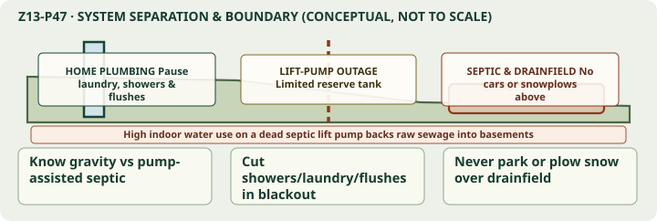

Z13-P47 · Home survival and utilities · New manuscript
Protect residential septic systems during electrical outages
Prevent raw sewage basement backups and drainfield failure when septic lift pumps or aerobic units lose grid power.
When it applies · Rural and suburban homes served by onsite septic tanks, mound systems, or grinder/effluent lift pumps.
Equipment · Septic system diagram (gravity vs pump-assisted), water-conservation routine, and licensed septic pumper/installer contact.

Actions
- Know BEFORE an outage whether your septic system is pure gravity-flow OR uses an electrical lift pump, mound pump, or aerobic treatment unit—pump-assisted tanks have limited emergency reserve volume and back raw sewage directly into basements if normal water use continues without power.[U07, U14]
- Cut household water volume drastically during any power outage: pause laundry, dishwashers, and long showers, capture sink rinse water in a bucket to toss outdoors safely away from wells, and minimize toilet flushes until power returns.[U07]
- Never drive vehicles, park heavy trailers, or pile plowed snowbanks over the septic tank lid or drainfield (compacted snow drives frost deep into Upper Midwest drainfields and crushes buried pipes).[U07, U10]
Failure recognition · Running three loads of laundry and taking long showers during a power outage on a mound septic system with a dead lift pump until sewage overflows the basement floor drain.[U07]
Verify · Confirm household knows gravity vs pump septic type, pauses high-water appliances during blackouts, and keeps vehicles/plows off the drainfield.[U07, U14]
Stop or change course · Gurgling drains, slow basement floor drains, sewage odors, or septic alarm buzzers require stopping ALL indoor water draining immediately and calling a licensed septic pro.[U07]
Evidence and editorial notes
- U07 · US EPA · Septic Systems (Onsite/Decentralized Systems) (current web edition)
- Section: Septic Systems > Power Outages, Floods, and Water Conservation · Conditions: Households with onsite septic systems during electrical outages or flooding
Support: Conserve household water sharply during outages (especially with pump-assisted septic tanks), avoid driving over drainfields, never pump out a flooded tank prematurely (buoyant tanks can float), and have licensed professionals inspect flooded systems.
Limitations: Using high-volume household plumbing when lift pumps are dead backs sewage directly into basements. · Conflicting evidence: None; critical outage wastewater boundary.
Editorial note: Grounds septic-system limits and outage water conservation in Z13. · Specialist reviewer: Onsite wastewater engineering and public health
Primary source · checked 2026-11-24 - U10 · FEMA / Ready.gov · Winter Weather (current web edition)
- Section: Winter Household Resilience > Frozen Pipes, Ice Dams, and Heating Loss · Conditions: Sub-zero Upper Midwest winter outages and prolonged cold snaps
Support: Prevent burst pipes by insulating exposed lines, keeping cabinet doors open, shutting off and draining water lines per plumbing guidance if indoor temperatures drop toward freezing, and consolidating household occupants into one safe insulated interior room.
Limitations: Draining hydronic boilers or gas water heaters requires exact manufacturer/plumber steps to prevent equipment damage or gas leaks. · Conflicting evidence: None; regionalizes winter home defense for Minnesota conditions.
Editorial note: Anchors winter pipe protection, thermal-zone consolidation, and abandonment thresholds. · Specialist reviewer: Residential plumbing, HVAC, and cold-weather emergency management
Primary source · checked 2026-11-24 - U14 · FEMA / Ready.gov · Make a Plan (current web edition)
- Section: Household Emergency Planning, Utility Maps, and Outage Checklists · Conditions: Pre-outage residential documentation and household drills
Support: Document main water, electrical panel, and gas shutoff locations, utility outage phone numbers, medical power registries, and neighborhood check-in networks on paper before storms hit.
Limitations: Utility medical-priority lists do not guarantee uninterrupted power during major ice storms or grid blackouts. · Conflicting evidence: None; bridges Z01 planning with Z13 household infrastructure.
Editorial note: Grounds household utility mapping and vulnerable-occupant contingencies. · Specialist reviewer: Emergency management and accessibility specialist
Primary source · checked 2026-11-24
Source lineage · US EPA Septic Systems; new manuscript · Classification · New manuscript.